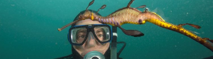
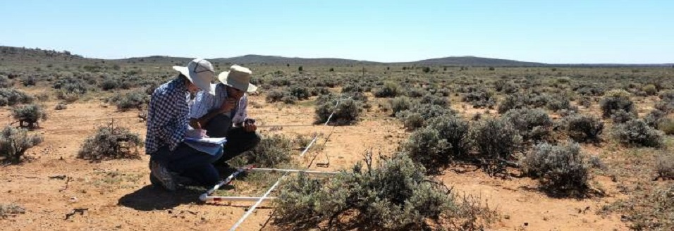
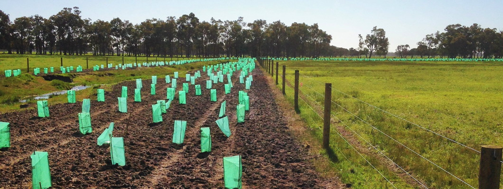
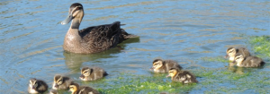

This work is licensed under a Creative Commons Attribution 3.0 Australia License 
Page contents:
Advanced data collection for biodiversity projects
BioCollect is a sophisticated, yet simple to use tool developed by the Atlas of Living Australia (ALA) in collaboration with over 100 organisations which are actively involved in field data capture. It has been developed to support the needs of scientists, ecologists, citizen scientists and natural resource managers in the field-collection and management of biodiversity, ecological and natural resource management (NRM) data. The tool is developed and hosted by the ALA and is free for public use.
BioCollect provides form-based structured data collection for:
It also supports upload of unstructured data in the form of data files, grey literature, images, sound bytes, videos, etc.
The system is fully integrated with other Atlas tools and we are currently working to enable seamless linkages with other global project finders, and other related national research infrastructure facilities such as the Terrestrial Ecosystem Research Network (TERN) and the Australian National Data Service (ANDS).
BioCollect for Citizen Science >
Citizen Science Central
BioCollect for Ecological Science >

Citizen science projects generally aim to either invite public participation to perform mass processing of data which requires human interpretation, or they aim to collect large volumes of structured data which can then be analysed for patterns and meaning. In both cases, citizen science is increasingly becoming a significant and important contributor to the pool of data which is being used to advance scientific knowledge and the many benefits to humanity and the natural world which flow from it.
Since 2010 the Atlas of Living Australia has been working with more than 100 organisations across Australia, providing support to their citizen science activities. Through this we have gained a deep understanding of the citizen science landscape across all biodiversity-related domains and the issues which confront people organising projects, the public wanting to participate in projects, and scientists needing data in their research.
With the BioCollect tool the ALA is aiming to address many of the issues which can be resolved, or at least reduced, with technology. Whilst BioCollect as a product is still developing and is still short of our vision for it, we believe that this tool fills a very significant gap in capability to support the growing needs of both scientists wanting to engage the public in their research and the public wanting to participate in important scientific work, including collecting their own observation data.
The Atlas welcomes feedback and more collaborators.
Read more about how the Atlas of Living Australia is supporting Citizen Science and BioBlitzes ...
Add your Citizen Science project >

"Scientific research" projects are differentiated from other project types by the purpose of the project and the need to ensure that project metadata (ie. information about the project, the methodologies used, and the veracity and integrity of the data itself) is properly described to enable effective peer review and re-use of project materials. The "Ecological Science" project type would most typically be used by scientists collecting data for their own research projects or by ecologists and natural resource management (NRM) practitioners undertaking surveys for planning related development applications, long-term site monitoring projects, etc.
BioCollect supports the collection of comprehensive standards-compliant metadata as well as both structured data (form-based) and unstructured data (free text and attached materials) for research projects, method-based surveys, and long term site monitoring.
The Terrestrial Ecosystem Research Network (TERN) is a 'sister' project of the Atlas of Living Australia (ALA) under Australia's National Collaborative Research Infrastructure Strategy (NCRIS). TERN runs the AEKOS system which is the national aggregation repository for ecological data and SHaRED which is a dataset lodgement interface for AEKOS.
Automated data packaging and transfer protocols between the ALA and the SHaRED/AEKOS systems allows for "Ecological science" type project data and metadata to be recorded in BioCollect and automatically discoverable and accessible in AEKOS. In addition, species data collected via structured forms in BioCollect will automatically create DarwinCore compliant occurrence records in the Atlas of Living Australia, whilst providing all of the benefits of a robust project management/data collection tool for users. BioCollect does the processing work for you, eliminating the need to split up and lodge your survey data in multiple repositories.
These automated linkages will provide significant improvements and efficiencies in data processing and management and also ensures that valuable well documented datasets are available for scientific reuse.
Add your Ecological Science project >

Natural resource management (NRM) projects involve undertaking a sequence of activities to achieve a planned environmental management outcome. Many individual activities in these projects involve assessing, identifying, collecting from, planting, treating or monitoring plants and/or animals, thus producing species occurrence data. This biodiversity data and the context in which it occurred is very important to science, particularly when combined with other information.
BioCollect supports NRM projects by providing a project management framework for you to create, manage and record data for your schedule of project activities, including both biodiversity and non-biodiversity activities. For organisations which undertake environmental intervention projects, such as environmental NGOs (non-government organisations), NRM bodies, local government authorities, landcare and other community NRM groups, etc., BioCollect provides a robust and feature-rich tool in which they can manage their data recording and communicate their projects outputs and outcomes to their communities.
Standardised activities covering the full range of activity types facilitate data aggregation for efficient monitoring of achievements as well as enabling consistency and efficiency gains in all areas of data collection, management and analysis processes.

Many organisations conduct a wide range of different kinds of projects and it is often difficult to obtain a clear real-time view across all projects. BioCollect supports the diverse range of project types that are undertaken and provides 'one stop shop' access to them, as well as aggregated views and statistical summaries of collected data and output measures.
Organisations associated with projects automatically have an organisation page which allows them to to view and access all organisation projects in BioCollect, including MERIT projects (required for Federal government funded projects) which they are associated with.
The Atlas of Living Australia is developing Android and Apple iOS mobile apps to complement the BioCollect web interface and to support in-situ collection of data in the field.
These apps will provide the same functionality as the BioCollect website, but will also use device features such as the camera, microphone, GPS, etc. to improve usability and data recording efficiency in the field. The apps will also work in offline mode and will support pre-downloading of maps and taxonomy for when you are intending to work in an area with little or no internet connectivity.
A user configurable setting will allow data collected via the apps to be automatically transmitted to the database when the device has a phone or wireless internet connection.
Some organisations require specialised apps for particular projects. The BioCollect apps which will be published by the ALA are provided as free generic mobile apps and will not support specific configuration or "look & feel" requirements.
However, BioCollect has a set of web service application interfaces (APIs) which enable bespoke mobile apps to link directly to specific organisation, project, or survey pages. This will allow people to develop their bespoke apps and websites, whilst using the BioCollect system as a database back-end for them.
Source code is available on the ALA GitHub site if you' like to develop a custom app. linked to a BioCollect project/survey.
The first version of our BioCollect and OzAtlas mobile apps. were released in July 2017. This is enough to get you started, but we know that more is needed.
Enhancements and new features for the apps are still being developed and updates will be available via the app stores in the usual way.
If you have something positive to say, please comment via the store. If you'd like to provide adverse comments or constructive suggestions for improvements or new features, we welcome your feedback via support@ala.org.au.
BioCollect is still a work in progress. The system currently supports data collection for citizen science and systematic ecological science projects, each of which has a "project finder" entry point where you can create your own project - click on the buttons to the right of this page. For organisations wanting to use BioCollect as their project database, you can simply create and manage surveys after creating your project. You can then collect, view and manage data, as well as use the system to communicate information about the project to project members and the general public. The system also provides organisation project portfolios which list, summarise, map, and provide access to, all of the projects which an organisation is associated with.
Web service APIs are also now available for integration with other systems and web sites as well as enabling bespoke mobile apps linked to projects hosted in BioCollect.